Artificial data generator
The synthetic data generator forms images using a probabilistic model based on user-supplied parameters. In addition to the image dimensions and sequence length,
Image formation
users can choose the pixel-size 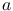 (nm), the density of molecules
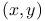 (molecules per 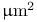), the emitter intensity
range  (photons), the emitter FWHM range (pixels), and the variance
of additive Poisson noise 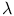 (photons). The software can also
simulate linear drift of the sample over time. We first generate a
background which is static for all the images in the sequence. Then
for each frame a set of molecules is generated and added to the image.
If drift was specified, the image is shifted. Additive noise is then
applied. The process can be summarized as follows
(photons), the emitter FWHM range (pixels), and the variance
of additive Poisson noise 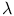 (photons). The software can also
simulate linear drift of the sample over time. We first generate a
background which is static for all the images in the sequence. Then
for each frame a set of molecules is generated and added to the image.
If drift was specified, the image is shifted. Additive noise is then
applied. The process can be summarized as follows
| 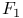 | (1) |
where 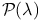 is a Poisson distributed variable with
parameter and  is an integrated bi-variate Gaussian PSF.
is an integrated bi-variate Gaussian PSF.
The parameters 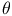 are picked randomly from a uniform distribution 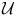 within the range of user-specified values. Thus
| (2) |
To simulate the EM gain, we use a stochastic model described in [1].
The EM register is modeled using the Gamma distribution 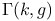
with its shape determined by the number of photo-electrons in the
register 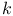 and scale given by the value of gain  .
.
Spatial density of molecules
Users can specify a fixed density of molecules for the whole image or a varying density by supplying a gray-scale mask 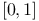 in which the intensities are used in the probability model which determine the probability of a molecule to appear at any given pixel,
| 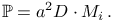 | (3) |
is the intensity of the  -th pixel in mask normalized
to the interval 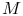 to represent a probability. For each pixel,
the generator randomly picks a uniformly distributed value
-th pixel in mask normalized
to the interval 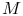 to represent a probability. For each pixel,
the generator randomly picks a uniformly distributed value  and if 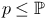 a molecule is placed inside the pixel with
a random offset from its center. If the density in a single pixel
is higher than one molecule, the value 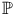 is greater than
one. In that case the generator renders a molecule, updates ,
picks a new
and if 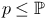 a molecule is placed inside the pixel with
a random offset from its center. If the density in a single pixel
is higher than one molecule, the value 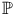 is greater than
one. In that case the generator renders a molecule, updates ,
picks a new  , and continues generating new molecules until 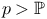.
, and continues generating new molecules until 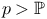.
References
- [1] (2013-01) A stochastic model for electron multiplication charge-coupled devices–from theory to practice., PloS one 8 (1), pp. e53671. External Links: Document, ISSN 1932-6203. Cited by: Image formation.
![[LOGO]]()